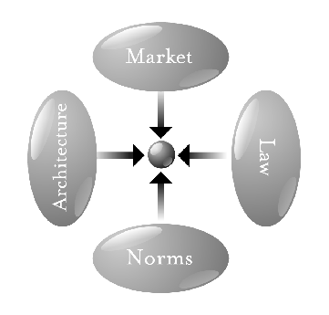

Intellectual Property, Lessig and the EU Copyright Directive
Papers We Love Berlin April 2019
Lusy
EU Copyright Directive
"The European Council (EC) describes their key goals with the Directive as protecting press publications; reducing the "value gap" between the profits made by Internet platforms and by content creators; encouraging collaboration between these two groups, and creating copyright exceptions for text- and data-mining." Source: EN WP
Timeline
2012 planned revision of 2001 Copyright Directive announced
Jul 2014 first report on the state of EU copyright published
14 Sep 2016 first draft of the new directive
20 Jun 2018 EU Parliament Committee on Legal Affairs
12 Sep 2018 EU Parliament approves a revised proposal
13 Feb 2019 final version after trilogue meetings
26 Mar 2019 EU Parlament votes in favour
15 Apr 2019 directive approved by the EU Council
2 year period for Member states to pass appropriate legislationDraft Article 11 (Article 15): "link tax"
"news aggregators or media-monitoring services" which use news articles for commercial purposes should pay the publishers for accessing them
"The protection granted under the first subparagraph shall not apply to acts of hyperlinking.
The rights provided for in the first subparagraph shall not apply in respect of the use of individual words or very short extracts of a press publication."
"4. The rights provided for in paragraph 1 shall expire two years after the press publication is published. That term shall be calculated from 1 January of the year following the date on which that press publication is published."
"5. Member States shall provide that authors of works incorporated in a press publication receive an appropriate share of the revenues that press publishers receive for the use of their press publications by information society service providers."
Draft Article 13 (Article 17): "upload filters"
tasks service providers that host user-generated content to employ "effective and proportionate" measures to prevent users from violating copyright
"Mit der Schrotflinte auf Youtube geschossen, halbes Netz mitgetroffen"

 https://twitter.com/schulzeeuropa/status/1096445520770404352
https://twitter.com/schulzeeuropa/status/1096445520770404352

{kind=link}
Lawrence Lessig
By Joi Ito, CC BY 2.0, https://commons.wikimedia.org/w/index.php?curid=59092992
Code and Other Laws of Cyberspace
 By Source, Fair use, https://en.wikipedia.org/w/index.php?curid=34070395
By Source, Fair use, https://en.wikipedia.org/w/index.php?curid=34070395
Code Version 2.0
 By Source, Fair use, https://en.wikipedia.org/w/index.php?curid=34069549
By Source, Fair use, https://en.wikipedia.org/w/index.php?curid=34069549
The pathetic dot theory
 By Lawrence Lessig - https://www.socialtext.net/data/workspaces/codev2/attachments/what_things_regulate:20061211230426-1-8535/scaled/4constraints.png, CC BY-SA 2.5, https://commons.wikimedia.org/w/index.php?curid=25113167
{kind=link}
Chapter 10: Intellectual Property
In a nutshell
"We are not entering a time when copyright is more threatened than it is in real space. We are instead entering a time when copyright is more effectively protected than at any time since Gutenberg."
Copyright, historically
"the single, defining feature of these norms can perhaps be summarized like this: that a consumer could do with the copyrighted content that he legally owned anything he wanted to do, without ever triggering the law of copyright."
"Roughly put, copyright gives a copyright holder certain exclusive rights over the work, including, most famously, the exclusive right to copy the work."
"The right is protected to the extent that laws (and norms) support it," "it is threatened to the extent that technology makes it easy to copy." "In this sense, copyright has always been at war with technology."
Analog vs digital
"Thus there were many ways in which you could use creative work in the analog world without producing a copy."
"Digital technology, at its core, makes copies."
"There is no way to use any content in a digital context without that use producing a copy."
Possible regulators
"What means would bring about the most efficient set of protections for property interests in cyberspace?"
"One is the traditional protection of law—the law defines a space where others should not enter and punishes people who enter nonetheless. The other protection is a fence, a technological device (a bit of code) that (among other things) blocks the unwanted from entering."
"it is hard for the law to distinguish between legitimate and illegitiamate uses of cyberspaces"
White Paper 1995
"The White Paper proceeds as if the problem of protecting intellectual property in cyberspace was just like the problem of protecting intellectual property in real space. [...] But something fundamental has changed: the role that code plays in the protection of intellectual property. Code can, and increasingly will, displace law as the primary defense of intellectual property in cyberspace. Private fences, not public law."
DMCA 1998
"Code that someone implements to control either access to or use of a copyrighted work got special legal protection under the DMCA: Circumvention of that code, subject to a few important exceptions, constituted a violation of the law."
Law vs contracts vs code
"As Stefik writes: [T]he consumer does not have the option of disregarding a digital contract by, for example, making unauthorized copies of a work."
For whom is the law
"Private law creates private rights to the extent that these private rights serve some collective good. If a private right is harmful to a collective good, then the state has no reason to create it."
"If the law did not protect authorship at all, there would be fewer authors."
"Now if all you think about is protecting the distribution of professionally created culture, this might not concern you much. If you’re trying to stop “piracy,” then a regime that says every use requires permission is a regime that gives you a fairly broad range of tools for stamping out piracy."
"Standing alongside professional culture is amateur culture—where amateur doesn’t mean inferior or without talent, but instead culture created by people who produce not for the money, but for the love of what they do."
"Importantly, too, this kind of cultural remix has historically been free of regulation."
Fair use
"Were these transactions left free because it was too costly to meter them? Or were these transactions left free because keeping them free was an important public value tied to copyright?"
"But maybe this conflict is just temporary. Couldn’t the code be changed to protect fair use? The answer to that hopeful (and again, hopeful because my main point is about whether incentives to protect fair use exist) question is no, not directly. Fair use inherently requires a judgment about purpose, or intent. That judgment is beyond the ken of even the best computers."
right to read anonymously
"we must ask whether the latent right to read anonymously, given to us before by imperfections in technologies, should be a legally protected right."
"These three examples reveal a common pattern—one that will reach far beyond copyright. At one time we enjoyed a certain kind of liberty. But that liberty was not directly chosen; it was a liberty resulting from the high costs of control."
Pending Choices
- whether to allow intellectual property in effect to become completely propertized
- whether to allow this regime to erase the anonymity latent in less efficient architectures of control
- whether to allow the expansion of intellectual property to drive out amateur culture
What values are we protecting?
Thank you!
These slides are licensed under the CC BY-SA 4.0 License.